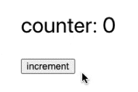
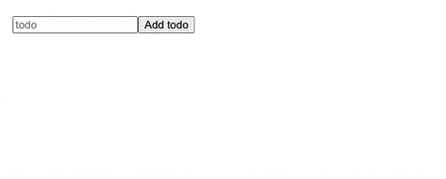
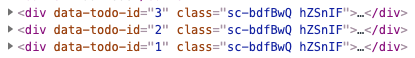

<!DOCTYPE html>
<html>
<!-- <html class="has-navbar-fixed-top"> -->
<head>
    <meta charset="utf-8">
<title>React 基礎：useState 實戰 Todo List - Mily</title>
<meta name="viewport" content="width=device-width, initial-scale=1, maximum-scale=1">

<link rel="stylesheet" href="//cdnjs.cloudflare.com/ajax/libs/outdated-browser/1.1.5/outdatedbrowser.min.css">


<meta name="description" content="">


    <meta name="description" content="React 最核心的觀念就是畫面永遠都由 state 產生">
<meta property="og:type" content="article">
<meta property="og:title" content="React 基礎：useState 實戰 Todo List">
<meta property="og:url" content="https://milyzoo.github.io/Front-End/React-%E5%9F%BA%E7%A4%8E%EF%BC%9AuseState%20%E5%AF%A6%E6%88%B0%20Todo%20List/index.html">
<meta property="og:site_name" content="Mily">
<meta property="og:description" content="React 最核心的觀念就是畫面永遠都由 state 產生">
<meta property="og:locale" content="zh_TW">
<meta property="og:image" content="https://milyzoo.github.io/Front-End/React-%E5%9F%BA%E7%A4%8E%EF%BC%9AuseState%20%E5%AF%A6%E6%88%B0%20Todo%20List/01.gif">
<meta property="og:image" content="https://milyzoo.github.io/Front-End/React-%E5%9F%BA%E7%A4%8E%EF%BC%9AuseState%20%E5%AF%A6%E6%88%B0%20Todo%20List/02.gif">
<meta property="og:image" content="https://milyzoo.github.io/Front-End/React-%E5%9F%BA%E7%A4%8E%EF%BC%9AuseState%20%E5%AF%A6%E6%88%B0%20Todo%20List/03.png">
<meta property="article:published_time" content="2021-03-09T15:53:06.000Z">
<meta property="article:modified_time" content="2021-05-24T12:42:38.894Z">
<meta property="article:author" content="Mily">
<meta property="article:tag" content="程式導師計畫">
<meta property="article:tag" content="JavaScript">
<meta property="article:tag" content="React">
<meta name="twitter:card" content="summary">
<meta name="twitter:image" content="https://milyzoo.github.io/Front-End/React-%E5%9F%BA%E7%A4%8E%EF%BC%9AuseState%20%E5%AF%A6%E6%88%B0%20Todo%20List/01.gif">


<link rel="icon" href="/favicon.png">


<link rel="stylesheet" href="//fonts.googleapis.com/css?family=Ovo|Source+Code+Pro">
<link rel="stylesheet" href="//cdnjs.cloudflare.com/ajax/libs/bulma/0.6.2/css/bulma.min.css">


<link rel="stylesheet" href="//cdnjs.cloudflare.com/ajax/libs/lightgallery/1.6.8/css/lightgallery.min.css">
<link rel="stylesheet" href="//cdnjs.cloudflare.com/ajax/libs/justifiedGallery/3.6.5/css/justifiedGallery.min.css">


<link rel="stylesheet" href="//cdnjs.cloudflare.com/ajax/libs/highlight.js/9.12.0/styles/tomorrow-night-eighties.min.css">


<link rel="stylesheet" href="/css/style.css">


    
    
    
    
    
    
    
    
    
    

    


<meta name="generator" content="Hexo 5.3.0"></head>
<body>
    
<nav class="navbar is-transparent navbar-main" role="navigation" aria-label="main navigation">
<!-- <nav class="navbar is-transparent is-fixed-top navbar-main" role="navigation" aria-label="main navigation"> -->
    <div class="container">
        <div class="navbar-brand">
            <a class="navbar-item navbar-logo" href="/">
                Mily
                <!-- 
                
                 -->
            </a>
            <div class="navbar-burger">
                <span></span>
                <span></span>
                <span></span>
            </div>
        </div>
        <div class="navbar-end">
            
            <div class="navbar-menu">
                
                <a class="navbar-item "
                   href="/archives">全文列表</a>
                
                <a class="navbar-item "
                   href="/categories">文章分類</a>
                
            </div>
            
            <div class="navbar-menu">
                
                <a class="navbar-item search" title="搜尋" href="javascript:;">
                    <i class="fas fa-search"></i>
                </a>
                
                
                <!-- 
                        <a class="navbar-item" target="_blank" title="GitHub" href="https://github.com/milyzoo">
                            
                            <i class="fab fa-github"></i>
                            
                        </a>
                   
                 -->
            </div>
        </div>
    </div>
</nav>

    <section class="section">
    <div class="container">
    <article class="article content gallery" itemscope itemprop="blogPost">
    <h1 class="article-title is-size-4-mobile" itemprop="name">
        
            React 基礎：useState 實戰 Todo List
        
    </h1>
    <div class="article-meta columns is-variable is-1 is-multiline is-mobile is-size-7-mobile">
        <span class="column is-narrow">
            <time datetime="2021-03-09T15:53:06.000Z" itemprop="datePublished">3月 9 2021</time>
        </span>
        
        <span class="column is-narrow article-category">
            <i class="far fa-folder"></i>
            <a class="article-category-link" href="/categories/Front-End/">Front-End</a>
        </span>
        
        <!-- 
        <span class="column is-narrow">
            
            
            13 分钟 讀完 (約 1881 字)
        </span>
         -->
    </div>
    <div class="article-entry is-size-6-mobile" itemprop="articleBody">
    
        <html><head></head><body><p>React 最核心的觀念就是<strong>畫面永遠都由 state 產生</strong></p>
<a id="more"></a>

<p>在 React 裡面分成兩種 component：</p>
<ul>
<li>function component</li>
<li>class component</li>
</ul>
<h3 id="什麼是-Hook"><a href="#什麼是-Hook" class="headerlink" title="什麼是 Hook"></a>什麼是 Hook</h3><p>Hook 是 React 16.8 中新增的功能，能達到不寫 class 就能使用 state 以及其他 React 的功能。</p>
<h3 id="開始使用-State-Hook"><a href="#開始使用-State-Hook" class="headerlink" title="開始使用 State Hook"></a>開始使用 State Hook</h3><p>使用 state 前要先引入 React。</p>
<figure class="highlight javascript hljs"><table><tbody><tr><td class="gutter"><pre><span class="line">1</span><br><span class="line">2</span><br></pre></td><td class="code"><pre><span class="line"><span class="hljs-comment">// App.js</span></span><br><span class="line"><span class="hljs-keyword">import</span> React <span class="hljs-keyword">from</span> <span class="hljs-string">"react"</span>;</span><br></pre></td></tr></tbody></table></figure>
<p>宣告一個新的 state 變數，我們稱為  <code>counter</code>。</p>
<ul>
<li>counter：state 的變數，存放 state 的值</li>
<li>setCounter：改變 state 變數的函式名稱</li>
<li>useState(0)：<code>0</code> 代表 state 變數的初始值</li>
</ul>
<figure class="highlight javascript hljs"><table><tbody><tr><td class="gutter"><pre><span class="line">1</span><br><span class="line">2</span><br><span class="line">3</span><br><span class="line">4</span><br><span class="line">5</span><br><span class="line">6</span><br><span class="line">7</span><br></pre></td><td class="code"><pre><span class="line"><span class="hljs-comment">// 如果沒有引入 import { useState } from 'react'; 就要在 .useState() 前面加上 React.</span></span><br><span class="line"><span class="hljs-keyword">const</span> [counter, setCounter] = React.useState(<span class="hljs-number">0</span>);</span><br><span class="line"></span><br><span class="line"><span class="hljs-comment">// 如果有引入  import { useState } from 'react'; 就可以忽略 React.</span></span><br><span class="line"><span class="hljs-keyword">import</span> { useState } <span class="hljs-keyword">from</span> <span class="hljs-string">"react"</span>;</span><br><span class="line"></span><br><span class="line"><span class="hljs-keyword">const</span> [counter, setCounter] = useState(<span class="hljs-number">0</span>);</span><br></pre></td></tr></tbody></table></figure>
<p>這句程式碼的原理其實就是 ES6 的解構語法。</p>
<figure class="highlight javascript hljs"><table><tbody><tr><td class="gutter"><pre><span class="line">1</span><br><span class="line">2</span><br><span class="line">3</span><br><span class="line">4</span><br><span class="line">5</span><br></pre></td><td class="code"><pre><span class="line"><span class="hljs-function"><span class="hljs-keyword">function</span> <span class="hljs-title">useState</span>(<span class="hljs-params"></span>) </span>{</span><br><span class="line">  <span class="hljs-keyword">return</span> [<span class="hljs-number">123</span>, <span class="hljs-number">456</span>];</span><br><span class="line">}</span><br><span class="line"></span><br><span class="line"><span class="hljs-keyword">const</span> [a, b] = React.useState(); <span class="hljs-comment">// a, b 可以任意取名</span></span><br></pre></td></tr></tbody></table></figure>
<p>使用範例：</p>
<figure class="highlight javascript hljs"><table><tbody><tr><td class="gutter"><pre><span class="line">1</span><br><span class="line">2</span><br><span class="line">3</span><br><span class="line">4</span><br><span class="line">5</span><br><span class="line">6</span><br><span class="line">7</span><br><span class="line">8</span><br><span class="line">9</span><br><span class="line">10</span><br><span class="line">11</span><br><span class="line">12</span><br><span class="line">13</span><br></pre></td><td class="code"><pre><span class="line"><span class="hljs-function"><span class="hljs-keyword">function</span> <span class="hljs-title">App</span>(<span class="hljs-params"></span>) </span>{</span><br><span class="line">  <span class="hljs-keyword">const</span> [counter, setCounter] = React.useState(<span class="hljs-number">0</span>);</span><br><span class="line"></span><br><span class="line">  <span class="hljs-keyword">const</span> handleButtonClick = <span class="hljs-function">() =&gt;</span> {</span><br><span class="line">    setCounter(counter + <span class="hljs-number">1</span>);</span><br><span class="line">  };</span><br><span class="line">  <span class="hljs-keyword">return</span> (</span><br><span class="line">    &lt;div className=<span class="hljs-string">"App"</span>&gt;</span><br><span class="line">      counter: {counter}</span><br><span class="line">      &lt;button onClick={handleButtonClick}&gt;increment&lt;/button&gt;</span><br><span class="line">    &lt;/div&gt;</span><br><span class="line">  );</span><br><span class="line">}</span><br></pre></td></tr></tbody></table></figure>
<p></p>
<h2 id="Todo-List-實戰"><a href="#Todo-List-實戰" class="headerlink" title="Todo List 實戰"></a>Todo List 實戰</h2><p>開始實作前會先講解幾個需要注意的重點：</p>
<ul>
<li>React 處理陣列的方式</li>
<li>State 觀念：immutable</li>
<li>沒有內容的標籤</li>
</ul>
<h4 id="一、React-處理陣列的方式"><a href="#一、React-處理陣列的方式" class="headerlink" title="一、React 處理陣列的方式"></a>一、React 處理陣列的方式</h4><p>因為 JSX 無法使用迴圈語法，所以 render 時需使用函式達到目的，這次使用 <code>map()</code> 來處理陣列。<br>使用 <code>map()</code> 的好處是把每個 array 的東西都 <code>map()</code> 成一個 component，就可以 render 出很多個 component。</p>
<p>先看不使用 <code>map()</code> 的做法：</p>
<figure class="highlight javascript hljs"><table><tbody><tr><td class="gutter"><pre><span class="line">1</span><br><span class="line">2</span><br><span class="line">3</span><br><span class="line">4</span><br><span class="line">5</span><br><span class="line">6</span><br><span class="line">7</span><br><span class="line">8</span><br><span class="line">9</span><br><span class="line">10</span><br><span class="line">11</span><br><span class="line">12</span><br></pre></td><td class="code"><pre><span class="line"><span class="hljs-function"><span class="hljs-keyword">function</span> <span class="hljs-title">App</span>(<span class="hljs-params"></span>) </span>{</span><br><span class="line">  <span class="hljs-keyword">const</span> [todos, setTodos] = useState([]);</span><br><span class="line"></span><br><span class="line">  <span class="hljs-keyword">const</span> handleButtonClick = <span class="hljs-function">() =&gt;</span> {};</span><br><span class="line"></span><br><span class="line">  <span class="hljs-keyword">return</span> (</span><br><span class="line">    &lt;div className=<span class="hljs-string">"App"</span>&gt;</span><br><span class="line">      &lt;button onClick={handleButtonClick}&gt;Add todo&lt;/button&gt;</span><br><span class="line">      {[<span class="hljs-xml"><span class="hljs-tag">&lt;<span class="hljs-name">TodoItem</span> <span class="hljs-attr">content</span>=<span class="hljs-string">{</span>"測試一"} /&gt;</span></span>, <span class="hljs-xml"><span class="hljs-tag">&lt;<span class="hljs-name">TodoItem</span> <span class="hljs-attr">content</span>=<span class="hljs-string">{</span>"測試二"} /&gt;</span></span>]}</span><br><span class="line">    &lt;/div&gt;</span><br><span class="line">  );</span><br><span class="line">}</span><br></pre></td></tr></tbody></table></figure>
<p>使用 <code>map()</code> 的做法：</p>
<figure class="highlight javascript hljs"><table><tbody><tr><td class="gutter"><pre><span class="line">1</span><br><span class="line">2</span><br><span class="line">3</span><br><span class="line">4</span><br><span class="line">5</span><br><span class="line">6</span><br><span class="line">7</span><br><span class="line">8</span><br><span class="line">9</span><br><span class="line">10</span><br><span class="line">11</span><br><span class="line">12</span><br><span class="line">13</span><br><span class="line">14</span><br></pre></td><td class="code"><pre><span class="line"><span class="hljs-function"><span class="hljs-keyword">function</span> <span class="hljs-title">App</span>(<span class="hljs-params"></span>) </span>{</span><br><span class="line">  <span class="hljs-keyword">const</span> [todos, setTodos] = useState([<span class="hljs-string">"測試一"</span>, <span class="hljs-string">"測試二"</span>]);</span><br><span class="line"></span><br><span class="line">  <span class="hljs-keyword">const</span> handleButtonClick = <span class="hljs-function">() =&gt;</span> {};</span><br><span class="line"></span><br><span class="line">  <span class="hljs-keyword">return</span> (</span><br><span class="line">    &lt;div className=<span class="hljs-string">"App"</span>&gt;</span><br><span class="line">      &lt;button onClick={handleButtonClick}&gt;Add todo&lt;/button&gt;</span><br><span class="line">      {todos.map(<span class="hljs-function">(<span class="hljs-params">todo</span>) =&gt;</span> (</span><br><span class="line">        &lt;TodoItem key={index} content={todo} /&gt;</span><br><span class="line">      ))}</span><br><span class="line">    &lt;/div&gt;</span><br><span class="line">  );</span><br><span class="line">}</span><br></pre></td></tr></tbody></table></figure>
<p>用這種方式 render 的時候，要加入 <code>key</code> 值，否則會出現錯誤：<code>index.js:1 Warning: Each child in a list should have a unique "key" prop.</code>，這邊暫時先傳 <code>index</code>（但一般來說不建議傳 index），<code>key</code> 值是不能重複的。</p>
<h4 id="二、State-觀念：immutable"><a href="#二、State-觀念：immutable" class="headerlink" title="二、State 觀念：immutable"></a>二、State 觀念：immutable</h4><p>state 有一個很重要的觀念是 <strong>immutable</strong>，當 React 判定新的 state 和舊的 state 一樣時，就不會做任何動作。</p>
<figure class="highlight javascript hljs"><table><tbody><tr><td class="gutter"><pre><span class="line">1</span><br><span class="line">2</span><br><span class="line">3</span><br><span class="line">4</span><br></pre></td><td class="code"><pre><span class="line"><span class="hljs-keyword">const</span> handleButtonClick = <span class="hljs-function">() =&gt;</span> {</span><br><span class="line">  todos.push(<span class="hljs-string">"測試三"</span>); <span class="hljs-comment">// 執行完這行後，原本的 todo 會變成 ["測試一", "測試二", "測試三"]</span></span><br><span class="line">  setTodos(todos); <span class="hljs-comment">// 設置新的 todo</span></span><br><span class="line">};</span><br></pre></td></tr></tbody></table></figure>
<p>所以不能直接去改原本的 state，而是產生新的 state，比較推薦的寫法是：</p>
<figure class="highlight javascript hljs"><table><tbody><tr><td class="gutter"><pre><span class="line">1</span><br><span class="line">2</span><br><span class="line">3</span><br></pre></td><td class="code"><pre><span class="line"><span class="hljs-keyword">const</span> handleButtonClick = <span class="hljs-function">() =&gt;</span> {</span><br><span class="line">  setTodos([<span class="hljs-string">"測試三"</span>, ...todos]); <span class="hljs-comment">// 搭配 ES6 解構</span></span><br><span class="line">};</span><br></pre></td></tr></tbody></table></figure>
<h4 id="三、沒有內容的標籤"><a href="#三、沒有內容的標籤" class="headerlink" title="三、沒有內容的標籤"></a>三、沒有內容的標籤</h4><p>在 React 中，如果標籤沒有內容時，一定要在結尾加上 <code>/</code>。</p>
<figure class="highlight javascript hljs"><table><tbody><tr><td class="gutter"><pre><span class="line">1</span><br><span class="line">2</span><br><span class="line">3</span><br><span class="line">4</span><br><span class="line">5</span><br></pre></td><td class="code"><pre><span class="line"><span class="hljs-comment">// HTML 寫法，結尾可以沒有「/」</span></span><br><span class="line">&lt;input type=<span class="hljs-string">"text"</span> placeholder=<span class="hljs-string">"todo"</span>&gt;</span><br><span class="line"></span><br><span class="line"><span class="hljs-comment">// React 寫法，結尾一定要有「/」</span></span><br><span class="line">&lt;input type=<span class="hljs-string">"text"</span> placeholder=<span class="hljs-string">"todo"</span> /&gt;</span><br></pre></td></tr></tbody></table></figure>
<h3 id="新增-Todo"><a href="#新增-Todo" class="headerlink" title="新增 Todo"></a>新增 Todo</h3><p>來實作新增事項的功能吧！</p>
<figure class="highlight javascript hljs"><table><tbody><tr><td class="gutter"><pre><span class="line">1</span><br><span class="line">2</span><br><span class="line">3</span><br><span class="line">4</span><br><span class="line">5</span><br><span class="line">6</span><br><span class="line">7</span><br><span class="line">8</span><br><span class="line">9</span><br><span class="line">10</span><br><span class="line">11</span><br><span class="line">12</span><br><span class="line">13</span><br><span class="line">14</span><br><span class="line">15</span><br><span class="line">16</span><br><span class="line">17</span><br><span class="line">18</span><br><span class="line">19</span><br><span class="line">20</span><br><span class="line">21</span><br><span class="line">22</span><br><span class="line">23</span><br><span class="line">24</span><br><span class="line">25</span><br><span class="line">26</span><br><span class="line">27</span><br><span class="line">28</span><br><span class="line">29</span><br><span class="line">30</span><br><span class="line">31</span><br><span class="line">32</span><br></pre></td><td class="code"><pre><span class="line"><span class="hljs-keyword">import</span> TodoItem <span class="hljs-keyword">from</span> <span class="hljs-string">"./TodoItem"</span>;</span><br><span class="line"><span class="hljs-keyword">import</span> React <span class="hljs-keyword">from</span> <span class="hljs-string">"react"</span>;</span><br><span class="line"><span class="hljs-keyword">import</span> { useState } <span class="hljs-keyword">from</span> <span class="hljs-string">"react"</span>;</span><br><span class="line"></span><br><span class="line"><span class="hljs-function"><span class="hljs-keyword">function</span> <span class="hljs-title">App</span>(<span class="hljs-params"></span>) </span>{</span><br><span class="line">  <span class="hljs-keyword">const</span> [todos, setTodos] = useState([]);</span><br><span class="line">  <span class="hljs-keyword">const</span> [value, setValue] = useState(<span class="hljs-string">""</span>);</span><br><span class="line"></span><br><span class="line">  <span class="hljs-keyword">const</span> handleButtonClick = <span class="hljs-function">() =&gt;</span> {</span><br><span class="line">    setTodos([value, ...todos]);</span><br><span class="line">    setValue(<span class="hljs-string">""</span>); <span class="hljs-comment">// 做完就清空 setValue</span></span><br><span class="line">  };</span><br><span class="line"></span><br><span class="line">  <span class="hljs-keyword">const</span> handleInputChange = <span class="hljs-function">(<span class="hljs-params">e</span>) =&gt;</span> {</span><br><span class="line">    setValue(e.target.value);</span><br><span class="line">  };</span><br><span class="line"></span><br><span class="line">  <span class="hljs-keyword">return</span> (</span><br><span class="line">    &lt;div className=<span class="hljs-string">"App"</span>&gt;</span><br><span class="line">      &lt;input</span><br><span class="line">        type=<span class="hljs-string">"text"</span></span><br><span class="line">        placeholder=<span class="hljs-string">"todo"</span></span><br><span class="line">        value={value}</span><br><span class="line">        onChange={handleInputChange}</span><br><span class="line">      /&gt;</span><br><span class="line">      &lt;button onClick={handleButtonClick}&gt;Add todo&lt;/button&gt;</span><br><span class="line">      {todos.map(<span class="hljs-function">(<span class="hljs-params">todo</span>) =&gt;</span> (</span><br><span class="line">        &lt;TodoItem key={index} content={todo} /&gt;</span><br><span class="line">      ))}</span><br><span class="line">    &lt;/div&gt;</span><br><span class="line">  );</span><br><span class="line">}</span><br></pre></td></tr></tbody></table></figure>
<figure class="highlight javascript hljs"><table><tbody><tr><td class="gutter"><pre><span class="line">1</span><br><span class="line">2</span><br><span class="line">3</span><br><span class="line">4</span><br><span class="line">5</span><br><span class="line">6</span><br><span class="line">7</span><br><span class="line">8</span><br><span class="line">9</span><br><span class="line">10</span><br><span class="line">11</span><br><span class="line">12</span><br><span class="line">13</span><br><span class="line">14</span><br><span class="line">15</span><br><span class="line">16</span><br><span class="line">17</span><br><span class="line">18</span><br><span class="line">19</span><br><span class="line">20</span><br><span class="line">21</span><br><span class="line">22</span><br><span class="line">23</span><br><span class="line">24</span><br><span class="line">25</span><br><span class="line">26</span><br><span class="line">27</span><br><span class="line">28</span><br><span class="line">29</span><br><span class="line">30</span><br><span class="line">31</span><br><span class="line">32</span><br><span class="line">33</span><br><span class="line">34</span><br><span class="line">35</span><br><span class="line">36</span><br><span class="line">37</span><br><span class="line">38</span><br><span class="line">39</span><br><span class="line">40</span><br><span class="line">41</span><br><span class="line">42</span><br><span class="line">43</span><br></pre></td><td class="code"><pre><span class="line"><span class="hljs-comment">// TodoItem.js 檔案的內容</span></span><br><span class="line"><span class="hljs-keyword">const</span> TodoItemWrapper = styled.div<span class="hljs-string">`</span></span><br><span class="line"><span class="hljs-string">  display: flex;</span></span><br><span class="line"><span class="hljs-string">  align-items: center;</span></span><br><span class="line"><span class="hljs-string">  justify-content: space-between;</span></span><br><span class="line"><span class="hljs-string">  padding: 8px 15px;</span></span><br><span class="line"><span class="hljs-string">  border: 1px solid #ccc;</span></span><br><span class="line"><span class="hljs-string">`</span>;</span><br><span class="line"></span><br><span class="line"><span class="hljs-keyword">const</span> TodoContent = styled.div<span class="hljs-string">`</span></span><br><span class="line"><span class="hljs-string">  color: <span class="hljs-subst">${(props) =&gt; props.theme.colors.primary_500}</span>;</span></span><br><span class="line"><span class="hljs-string">  font-size: 12px;</span></span><br><span class="line"><span class="hljs-string"></span></span><br><span class="line"><span class="hljs-string">  <span class="hljs-subst">${(props) =&gt;</span></span></span><br><span class="line"><span class="hljs-string"><span class="hljs-subst">    props.size === <span class="hljs-string">"XL"</span> &amp;&amp;</span></span></span><br><span class="line"><span class="hljs-string"><span class="hljs-subst">    <span class="hljs-string">`</span></span></span></span><br><span class="line"><span class="hljs-string"><span class="hljs-subst"><span class="hljs-string">    font-size: 20px;</span></span></span></span><br><span class="line"><span class="hljs-string"><span class="hljs-subst"><span class="hljs-string">  `</span>}</span></span></span><br><span class="line"><span class="hljs-string">`</span>;</span><br><span class="line"></span><br><span class="line"><span class="hljs-keyword">const</span> TodoButtonWrapper = styled.div<span class="hljs-string">``</span>;</span><br><span class="line"></span><br><span class="line"><span class="hljs-keyword">const</span> Button = styled.button<span class="hljs-string">`</span></span><br><span class="line"><span class="hljs-string">  padding: 10px;</span></span><br><span class="line"><span class="hljs-string">  color: #333;</span></span><br><span class="line"><span class="hljs-string">  font-size: 20px;</span></span><br><span class="line"><span class="hljs-string"></span></span><br><span class="line"><span class="hljs-string">  &amp; + &amp; {</span></span><br><span class="line"><span class="hljs-string">    margin-left: 15px;</span></span><br><span class="line"><span class="hljs-string">  }</span></span><br><span class="line"><span class="hljs-string">`</span>;</span><br><span class="line"></span><br><span class="line"><span class="hljs-keyword">export</span> <span class="hljs-keyword">default</span> <span class="hljs-function"><span class="hljs-keyword">function</span> <span class="hljs-title">TodoItem</span>(<span class="hljs-params">{ todo }</span>) </span>{</span><br><span class="line">  <span class="hljs-keyword">return</span> (</span><br><span class="line">    &lt;TodoItemWrapper data-todo-id={todo.id}&gt;</span><br><span class="line">      &lt;TodoContent&gt;{todo.content}&lt;/TodoContent&gt;</span><br><span class="line">      &lt;TodoButtonWrapper&gt;</span><br><span class="line">        &lt;Button&gt;已完成&lt;/Button&gt;</span><br><span class="line">        &lt;Button&gt;刪除&lt;/Button&gt;</span><br><span class="line">      &lt;/TodoButtonWrapper&gt;</span><br><span class="line">    &lt;/TodoItemWrapper&gt;</span><br><span class="line">  );</span><br><span class="line">}</span><br></pre></td></tr></tbody></table></figure>
<p></p>
<h3 id="幫-Todo-List-加上-id"><a href="#幫-Todo-List-加上-id" class="headerlink" title="幫 Todo List 加上 id"></a>幫 Todo List 加上 id</h3><p>第一種做法：</p>
<figure class="highlight javascript hljs"><table><tbody><tr><td class="gutter"><pre><span class="line">1</span><br><span class="line">2</span><br><span class="line">3</span><br><span class="line">4</span><br><span class="line">5</span><br><span class="line">6</span><br><span class="line">7</span><br><span class="line">8</span><br><span class="line">9</span><br><span class="line">10</span><br><span class="line">11</span><br><span class="line">12</span><br><span class="line">13</span><br><span class="line">14</span><br><span class="line">15</span><br><span class="line">16</span><br><span class="line">17</span><br><span class="line">18</span><br><span class="line">19</span><br><span class="line">20</span><br><span class="line">21</span><br><span class="line">22</span><br><span class="line">23</span><br><span class="line">24</span><br><span class="line">25</span><br><span class="line">26</span><br><span class="line">27</span><br><span class="line">28</span><br><span class="line">29</span><br><span class="line">30</span><br><span class="line">31</span><br><span class="line">32</span><br><span class="line">33</span><br><span class="line">34</span><br><span class="line">35</span><br><span class="line">36</span><br></pre></td><td class="code"><pre><span class="line"><span class="hljs-keyword">let</span> id = <span class="hljs-number">2</span>;</span><br><span class="line"><span class="hljs-function"><span class="hljs-keyword">function</span> <span class="hljs-title">App</span>(<span class="hljs-params"></span>) </span>{</span><br><span class="line">  <span class="hljs-keyword">const</span> [todos, setTodos] = useState([{ <span class="hljs-attr">id</span>: <span class="hljs-number">1</span>, <span class="hljs-attr">content</span>: <span class="hljs-string">"abc"</span> }]);</span><br><span class="line">  <span class="hljs-keyword">const</span> [value, setValue] = useState(<span class="hljs-string">""</span>);</span><br><span class="line"></span><br><span class="line">  <span class="hljs-keyword">const</span> handleButtonClick = <span class="hljs-function">() =&gt;</span> {</span><br><span class="line">    setTodos([</span><br><span class="line">      {</span><br><span class="line">        id: id,</span><br><span class="line">        content: value,</span><br><span class="line">      },</span><br><span class="line">      ...todos,</span><br><span class="line">    ]);</span><br><span class="line">    setValue(<span class="hljs-string">""</span>); <span class="hljs-comment">// 做完就清空 setValue</span></span><br><span class="line">    id++;</span><br><span class="line">  };</span><br><span class="line"></span><br><span class="line">  <span class="hljs-keyword">const</span> handleInputChange = <span class="hljs-function">(<span class="hljs-params">e</span>) =&gt;</span> {</span><br><span class="line">    setValue(e.target.value);</span><br><span class="line">  };</span><br><span class="line"></span><br><span class="line">  <span class="hljs-keyword">return</span> (</span><br><span class="line">    &lt;div className=<span class="hljs-string">"App"</span>&gt;</span><br><span class="line">      &lt;input</span><br><span class="line">        type=<span class="hljs-string">"text"</span></span><br><span class="line">        placeholder=<span class="hljs-string">"todo"</span></span><br><span class="line">        value={value}</span><br><span class="line">        onChange={handleInputChange}</span><br><span class="line">      /&gt;</span><br><span class="line">      &lt;button onClick={handleButtonClick}&gt;Add todo&lt;/button&gt;</span><br><span class="line">      {todos.map(<span class="hljs-function">(<span class="hljs-params">todo</span>) =&gt;</span> (</span><br><span class="line">        &lt;TodoItem key={todo.id} content={todo.content} /&gt;</span><br><span class="line">      ))}</span><br><span class="line">    &lt;/div&gt;</span><br><span class="line">  );</span><br><span class="line">}</span><br></pre></td></tr></tbody></table></figure>
<p>第二種做法，使用 <code>useRef</code>：</p>
<figure class="highlight javascript hljs"><table><tbody><tr><td class="gutter"><pre><span class="line">1</span><br><span class="line">2</span><br><span class="line">3</span><br><span class="line">4</span><br><span class="line">5</span><br><span class="line">6</span><br><span class="line">7</span><br><span class="line">8</span><br><span class="line">9</span><br><span class="line">10</span><br><span class="line">11</span><br><span class="line">12</span><br><span class="line">13</span><br><span class="line">14</span><br><span class="line">15</span><br><span class="line">16</span><br><span class="line">17</span><br><span class="line">18</span><br><span class="line">19</span><br><span class="line">20</span><br><span class="line">21</span><br><span class="line">22</span><br><span class="line">23</span><br><span class="line">24</span><br><span class="line">25</span><br><span class="line">26</span><br><span class="line">27</span><br><span class="line">28</span><br><span class="line">29</span><br><span class="line">30</span><br><span class="line">31</span><br><span class="line">32</span><br><span class="line">33</span><br><span class="line">34</span><br><span class="line">35</span><br><span class="line">36</span><br><span class="line">37</span><br><span class="line">38</span><br><span class="line">39</span><br><span class="line">40</span><br><span class="line">41</span><br></pre></td><td class="code"><pre><span class="line"><span class="hljs-keyword">import</span> { useState, useRef } <span class="hljs-keyword">from</span> <span class="hljs-string">"react"</span>;</span><br><span class="line"></span><br><span class="line"><span class="hljs-function"><span class="hljs-keyword">function</span> <span class="hljs-title">App</span>(<span class="hljs-params"></span>) </span>{</span><br><span class="line">  <span class="hljs-keyword">const</span> [todos, setTodos] = useState([</span><br><span class="line">    { <span class="hljs-attr">id</span>: <span class="hljs-number">1</span>, <span class="hljs-attr">content</span>: <span class="hljs-string">"test content"</span> }, <span class="hljs-comment">// 內建一筆資料</span></span><br><span class="line">  ]);</span><br><span class="line">  <span class="hljs-keyword">const</span> [value, setValue] = useState(<span class="hljs-string">""</span>);</span><br><span class="line">  <span class="hljs-keyword">const</span> id = useRef(<span class="hljs-number">2</span>); <span class="hljs-comment">// 上面已經有內建 id:1，所以初始值要從 2 開始</span></span><br><span class="line"></span><br><span class="line">  <span class="hljs-keyword">const</span> handleButtonClick = <span class="hljs-function">() =&gt;</span> {</span><br><span class="line">    setTodos([</span><br><span class="line">      {</span><br><span class="line">        id: id.current,</span><br><span class="line">        content: value,</span><br><span class="line">      },</span><br><span class="line">      ...todos,</span><br><span class="line">    ]);</span><br><span class="line">    setValue(<span class="hljs-string">""</span>); <span class="hljs-comment">// 做完就清空 setValue</span></span><br><span class="line">    id.current++;</span><br><span class="line">  };</span><br><span class="line"></span><br><span class="line">  <span class="hljs-keyword">const</span> handleInputChange = <span class="hljs-function">(<span class="hljs-params">e</span>) =&gt;</span> {</span><br><span class="line">    setValue(e.target.value);</span><br><span class="line">  };</span><br><span class="line"></span><br><span class="line">  <span class="hljs-keyword">return</span> (</span><br><span class="line">    &lt;div className=<span class="hljs-string">"App"</span>&gt;</span><br><span class="line">      &lt;input</span><br><span class="line">        type=<span class="hljs-string">"text"</span></span><br><span class="line">        placeholder=<span class="hljs-string">"todo"</span></span><br><span class="line">        value={value}</span><br><span class="line">        onChange={handleInputChange}</span><br><span class="line">      /&gt;</span><br><span class="line">      &lt;button onClick={handleButtonClick}&gt;Add todo&lt;/button&gt;</span><br><span class="line">      {todos.map(<span class="hljs-function">(<span class="hljs-params">todo</span>) =&gt;</span> (</span><br><span class="line">        &lt;TodoItem key={todo.id} todo={todo} /&gt;</span><br><span class="line">      ))}{<span class="hljs-string">" "</span>}</span><br><span class="line">      <span class="hljs-comment">// todo={todo} 傳入 todo 參數</span></span><br><span class="line">    &lt;/div&gt;</span><br><span class="line">  );</span><br><span class="line">}</span><br></pre></td></tr></tbody></table></figure>
<p>接著修改 <code>TodoItem.js</code></p>
<figure class="highlight javascript hljs"><table><tbody><tr><td class="gutter"><pre><span class="line">1</span><br><span class="line">2</span><br><span class="line">3</span><br><span class="line">4</span><br><span class="line">5</span><br><span class="line">6</span><br><span class="line">7</span><br><span class="line">8</span><br><span class="line">9</span><br><span class="line">10</span><br><span class="line">11</span><br></pre></td><td class="code"><pre><span class="line"><span class="hljs-keyword">export</span> <span class="hljs-keyword">default</span> <span class="hljs-function"><span class="hljs-keyword">function</span> <span class="hljs-title">TodoItem</span>(<span class="hljs-params">{ todo }</span>) </span>{</span><br><span class="line">  <span class="hljs-keyword">return</span> (</span><br><span class="line">    &lt;TodoItemWrapper data-todo-id={todo.id}&gt;</span><br><span class="line">      &lt;TodoContent&gt;{todo.content}&lt;/TodoContent&gt;</span><br><span class="line">      &lt;TodoButtonWrapper&gt;</span><br><span class="line">        &lt;Button&gt;已完成&lt;/Button&gt;</span><br><span class="line">        &lt;Button&gt;刪除&lt;/Button&gt;</span><br><span class="line">      &lt;/TodoButtonWrapper&gt;</span><br><span class="line">    &lt;/TodoItemWrapper&gt;</span><br><span class="line">  );</span><br><span class="line">}</span><br></pre></td></tr></tbody></table></figure>
<p>成功得到 id：<br></p>
<h3 id="實作刪除功能"><a href="#實作刪除功能" class="headerlink" title="實作刪除功能"></a>實作刪除功能</h3><p>在 <code>App.js</code>（Parent 層） 定義一個 <code>handleDeleteClick</code> 的函式，裡面傳入 <code>id</code>，並用 <code>handleDeleteClick={handleDeleteClick}</code> 把函式傳到 <code>TodoItem.js</code>（Children 層）</p>
<figure class="highlight javascript hljs"><table><tbody><tr><td class="gutter"><pre><span class="line">1</span><br><span class="line">2</span><br><span class="line">3</span><br><span class="line">4</span><br><span class="line">5</span><br><span class="line">6</span><br><span class="line">7</span><br><span class="line">8</span><br><span class="line">9</span><br><span class="line">10</span><br><span class="line">11</span><br><span class="line">12</span><br><span class="line">13</span><br><span class="line">14</span><br><span class="line">15</span><br><span class="line">16</span><br><span class="line">17</span><br><span class="line">18</span><br><span class="line">19</span><br><span class="line">20</span><br></pre></td><td class="code"><pre><span class="line"><span class="hljs-keyword">const</span> handleDeleteClick = <span class="hljs-function">(<span class="hljs-params">id</span>) =&gt;</span> {};</span><br><span class="line"></span><br><span class="line"><span class="hljs-keyword">return</span> (</span><br><span class="line">  &lt;div className=<span class="hljs-string">"App"</span>&gt;</span><br><span class="line">    &lt;input</span><br><span class="line">      type=<span class="hljs-string">"text"</span></span><br><span class="line">      placeholder=<span class="hljs-string">"todo"</span></span><br><span class="line">      value={value}</span><br><span class="line">      onChange={handleInputChange}</span><br><span class="line">    /&gt;</span><br><span class="line">    &lt;button onClick={handleButtonClick}&gt;Add todo&lt;/button&gt;</span><br><span class="line">    {todos.map(<span class="hljs-function">(<span class="hljs-params">todo</span>) =&gt;</span> (</span><br><span class="line">      &lt;TodoItem</span><br><span class="line">        key={todo.id}</span><br><span class="line">        todo={todo}</span><br><span class="line">        handleDeleteClick={handleDeleteClick}</span><br><span class="line">      /&gt;</span><br><span class="line">    ))}</span><br><span class="line">  &lt;/div&gt;</span><br><span class="line">);</span><br></pre></td></tr></tbody></table></figure>
<p>接著到 <code>TodoItem.js</code> 接收 <code>handleDeleteClick</code> 函式，就可以利用按鈕的監聽事件來呼叫 <code>handleDeleteClick</code> 函式，<code>todo.id</code> 即可傳回 Parent 層。</p>
<figure class="highlight javascript hljs"><table><tbody><tr><td class="gutter"><pre><span class="line">1</span><br><span class="line">2</span><br><span class="line">3</span><br><span class="line">4</span><br><span class="line">5</span><br><span class="line">6</span><br><span class="line">7</span><br><span class="line">8</span><br><span class="line">9</span><br><span class="line">10</span><br><span class="line">11</span><br><span class="line">12</span><br><span class="line">13</span><br><span class="line">14</span><br><span class="line">15</span><br><span class="line">16</span><br><span class="line">17</span><br></pre></td><td class="code"><pre><span class="line"><span class="hljs-keyword">export</span> <span class="hljs-keyword">default</span> <span class="hljs-function"><span class="hljs-keyword">function</span> <span class="hljs-title">TodoItem</span>(<span class="hljs-params">{ todo, handleDeleteClick }</span>) </span>{</span><br><span class="line">  <span class="hljs-keyword">return</span> (</span><br><span class="line">    &lt;TodoItemWrapper data-todo-id={todo.id}&gt;</span><br><span class="line">      &lt;TodoContent&gt;{todo.content}&lt;/TodoContent&gt;</span><br><span class="line">      &lt;TodoButtonWrapper&gt;</span><br><span class="line">        &lt;Button&gt;已完成&lt;/Button&gt;</span><br><span class="line">        &lt;Button</span><br><span class="line">          onClick={<span class="hljs-function">() =&gt;</span> {</span><br><span class="line">            handleDeleteClick(todo.id);</span><br><span class="line">          }}</span><br><span class="line">        &gt;</span><br><span class="line">          刪除</span><br><span class="line">        &lt;/Button&gt;</span><br><span class="line">      &lt;/TodoButtonWrapper&gt;</span><br><span class="line">    &lt;/TodoItemWrapper&gt;</span><br><span class="line">  );</span><br><span class="line">}</span><br></pre></td></tr></tbody></table></figure>
<p>最後再回 <code>App.js</code>（Parent 層）修改函式，即可完成刪除功能！</p>
<figure class="highlight javascript hljs"><table><tbody><tr><td class="gutter"><pre><span class="line">1</span><br><span class="line">2</span><br><span class="line">3</span><br><span class="line">4</span><br></pre></td><td class="code"><pre><span class="line"><span class="hljs-keyword">const</span> handleDeleteClick = <span class="hljs-function">(<span class="hljs-params">id</span>) =&gt;</span> {</span><br><span class="line">  setTodos(todos.filter(<span class="hljs-function">(<span class="hljs-params">todo</span>) =&gt;</span> todo.id !== id));</span><br><span class="line">  <span class="hljs-comment">// filter 只會留下符合條件的東西，而 todo.id 一定等於 id，這代表不會留下任何東西，即可達成刪除功能</span></span><br><span class="line">}; <span class="hljs-comment">// 不能使用 splice()，因為會改到原本的 todo，所以此處使用 filter()</span></span><br></pre></td></tr></tbody></table></figure>
<h3 id="更改-todo-的狀態"><a href="#更改-todo-的狀態" class="headerlink" title="更改 todo 的狀態"></a>更改 todo 的狀態</h3><p>先前的資料結構只有紀錄 <code>id</code> 和內容，為了能夠更改 todo 的狀態，要再新增 <code>isDone: ?</code>。</p>
<figure class="highlight javascript hljs"><table><tbody><tr><td class="gutter"><pre><span class="line">1</span><br><span class="line">2</span><br><span class="line">3</span><br><span class="line">4</span><br><span class="line">5</span><br><span class="line">6</span><br></pre></td><td class="code"><pre><span class="line"><span class="hljs-keyword">const</span> [todos, setTodos] = useState([</span><br><span class="line">  { <span class="hljs-attr">id</span>: <span class="hljs-number">1</span>, <span class="hljs-attr">content</span>: <span class="hljs-string">"test content"</span>, <span class="hljs-attr">isDone</span>: <span class="hljs-literal">true</span> },</span><br><span class="line">  { <span class="hljs-attr">id</span>: <span class="hljs-number">2</span>, <span class="hljs-attr">content</span>: <span class="hljs-string">"not done"</span>, <span class="hljs-attr">isDone</span>: <span class="hljs-literal">false</span> },</span><br><span class="line">]);</span><br><span class="line"><span class="hljs-keyword">const</span> [value, setValue] = useState(<span class="hljs-string">""</span>);</span><br><span class="line"><span class="hljs-keyword">const</span> id = useRef(<span class="hljs-number">3</span>);</span><br></pre></td></tr></tbody></table></figure>
<p>接著到 <code>TodoItem.js</code> 檔案寫判斷 todo 狀態的語法，不過特別要注意的是 <strong>React 沒有辦法寫 if 判斷式</strong>，所以我們改用三元運算子來判斷。<br><code>&lt;TodoContent&gt;</code> 寫入 <code>isDone={todo.isDone}</code> 來傳參數。</p>
<figure class="highlight javascript hljs"><table><tbody><tr><td class="gutter"><pre><span class="line">1</span><br><span class="line">2</span><br><span class="line">3</span><br><span class="line">4</span><br><span class="line">5</span><br><span class="line">6</span><br><span class="line">7</span><br><span class="line">8</span><br><span class="line">9</span><br><span class="line">10</span><br><span class="line">11</span><br><span class="line">12</span><br><span class="line">13</span><br><span class="line">14</span><br><span class="line">15</span><br><span class="line">16</span><br><span class="line">17</span><br><span class="line">18</span><br></pre></td><td class="code"><pre><span class="line"><span class="hljs-keyword">export</span> <span class="hljs-keyword">default</span> <span class="hljs-function"><span class="hljs-keyword">function</span> <span class="hljs-title">TodoItem</span>(<span class="hljs-params">{ todo, handleDeleteClick }</span>) </span>{</span><br><span class="line">  <span class="hljs-keyword">return</span> (</span><br><span class="line">    &lt;TodoItemWrapper data-todo-id={todo.id}&gt;</span><br><span class="line">      <span class="hljs-comment">// isDone 前面加個 $ 就可以不讓「值」傳到 DOM 上面（不顯示在 HTML 的意思）</span></span><br><span class="line">      &lt;TodoContent $isDone={todo.isDone}&gt;{todo.content}&lt;/TodoContent&gt;</span><br><span class="line">      &lt;TodoButtonWrapper&gt;</span><br><span class="line">        &lt;Button&gt;{todo.isDone ? <span class="hljs-string">"未完成"</span> : <span class="hljs-string">"已完成"</span>}&lt;/Button&gt;</span><br><span class="line">        &lt;Button</span><br><span class="line">          onClick={<span class="hljs-function">() =&gt;</span> {</span><br><span class="line">            handleDeleteClick(todo.id);</span><br><span class="line">          }}</span><br><span class="line">        &gt;</span><br><span class="line">          刪除</span><br><span class="line">        &lt;/Button&gt;</span><br><span class="line">      &lt;/TodoButtonWrapper&gt;</span><br><span class="line">    &lt;/TodoItemWrapper&gt;</span><br><span class="line">  );</span><br><span class="line">}</span><br></pre></td></tr></tbody></table></figure>
<p>然後到 <code>TodoContent</code> 修改將傳入的參數（props）</p>
<figure class="highlight javascript hljs"><table><tbody><tr><td class="gutter"><pre><span class="line">1</span><br><span class="line">2</span><br><span class="line">3</span><br><span class="line">4</span><br><span class="line">5</span><br><span class="line">6</span><br><span class="line">7</span><br><span class="line">8</span><br><span class="line">9</span><br><span class="line">10</span><br></pre></td><td class="code"><pre><span class="line"><span class="hljs-keyword">const</span> TodoContent = styled.div<span class="hljs-string">`</span></span><br><span class="line"><span class="hljs-string">  color: <span class="hljs-subst">${(props) =&gt; props.theme.colors.primary_500}</span>;</span></span><br><span class="line"><span class="hljs-string">  font-size: 12px;</span></span><br><span class="line"><span class="hljs-string"></span></span><br><span class="line"><span class="hljs-string">  <span class="hljs-subst">${(props) =&gt;</span></span></span><br><span class="line"><span class="hljs-string"><span class="hljs-subst">    props.$isDone &amp;&amp;</span></span></span><br><span class="line"><span class="hljs-string"><span class="hljs-subst">    <span class="hljs-string">`</span></span></span></span><br><span class="line"><span class="hljs-string"><span class="hljs-subst"><span class="hljs-string">    text-decoration: line-through;</span></span></span></span><br><span class="line"><span class="hljs-string"><span class="hljs-subst"><span class="hljs-string">  `</span>}</span></span></span><br><span class="line"><span class="hljs-string">`</span>;</span><br></pre></td></tr></tbody></table></figure>
<h3 id="加上編輯狀態功能"><a href="#加上編輯狀態功能" class="headerlink" title="加上編輯狀態功能"></a>加上編輯狀態功能</h3><p>在 <code>App.js</code>（Parent 層） 定義一個 <code>handleToggleClick</code> 的函式，裡面傳入 <code>id</code>，並用 <code>handleToggleClick={handleToggleClick}</code> 把函式傳到 <code>TodoItem.js</code>（Children 層）</p>
<figure class="highlight javascript hljs"><table><tbody><tr><td class="gutter"><pre><span class="line">1</span><br><span class="line">2</span><br><span class="line">3</span><br><span class="line">4</span><br><span class="line">5</span><br><span class="line">6</span><br><span class="line">7</span><br><span class="line">8</span><br><span class="line">9</span><br><span class="line">10</span><br><span class="line">11</span><br><span class="line">12</span><br><span class="line">13</span><br><span class="line">14</span><br><span class="line">15</span><br><span class="line">16</span><br><span class="line">17</span><br><span class="line">18</span><br><span class="line">19</span><br><span class="line">20</span><br><span class="line">21</span><br><span class="line">22</span><br><span class="line">23</span><br><span class="line">24</span><br><span class="line">25</span><br><span class="line">26</span><br><span class="line">27</span><br><span class="line">28</span><br><span class="line">29</span><br><span class="line">30</span><br><span class="line">31</span><br><span class="line">32</span><br><span class="line">33</span><br><span class="line">34</span><br><span class="line">35</span><br></pre></td><td class="code"><pre><span class="line"><span class="hljs-keyword">const</span> handleToggleClick = <span class="hljs-function">(<span class="hljs-params">id</span>) =&gt;</span> {</span><br><span class="line">  setTodos(</span><br><span class="line">    todos.map(<span class="hljs-function">(<span class="hljs-params">todo</span>) =&gt;</span> {</span><br><span class="line">      <span class="hljs-comment">// 如果這個 todo 不是要修改的 todo id 就回傳原本的 todo</span></span><br><span class="line">      <span class="hljs-keyword">if</span> (todo.id !== id) <span class="hljs-keyword">return</span> todo;</span><br><span class="line"></span><br><span class="line">      <span class="hljs-comment">// 進入這一行就代表是要修改的 todo.id</span></span><br><span class="line">      <span class="hljs-comment">// 回傳原本的東西（...todo）+ 要修改的屬性（isDone: !todo.isDone）</span></span><br><span class="line">      <span class="hljs-keyword">return</span> {</span><br><span class="line">        ...todo,</span><br><span class="line">        isDone: !todo.isDone,</span><br><span class="line">      };</span><br><span class="line">    })</span><br><span class="line">  );</span><br><span class="line">};</span><br><span class="line"></span><br><span class="line"><span class="hljs-keyword">return</span> (</span><br><span class="line">  &lt;div className=<span class="hljs-string">"App"</span>&gt;</span><br><span class="line">    &lt;input</span><br><span class="line">      type=<span class="hljs-string">"text"</span></span><br><span class="line">      placeholder=<span class="hljs-string">"todo"</span></span><br><span class="line">      value={value}</span><br><span class="line">      onChange={handleInputChange}</span><br><span class="line">    /&gt;</span><br><span class="line">    &lt;button onClick={handleButtonClick}&gt;Add todo&lt;/button&gt;</span><br><span class="line">    {todos.map(<span class="hljs-function">(<span class="hljs-params">todo</span>) =&gt;</span> (</span><br><span class="line">      &lt;TodoItem</span><br><span class="line">        key={todo.id}</span><br><span class="line">        todo={todo}</span><br><span class="line">        handleDeleteClick={handleDeleteClick}</span><br><span class="line">        handleToggleClick={handleToggleClick}</span><br><span class="line">      /&gt;</span><br><span class="line">    ))}</span><br><span class="line">  &lt;/div&gt;</span><br><span class="line">);</span><br></pre></td></tr></tbody></table></figure>
<p>接著到 <code>TodoItem.js</code> 接收 <code>handleToggleClick</code> 函式，就可以利用按鈕的監聽事件來呼叫 <code>handleToggleClick</code> 函式，<code>todo.id</code> 即可傳回 Parent 層。</p>
<figure class="highlight javascript hljs"><table><tbody><tr><td class="gutter"><pre><span class="line">1</span><br><span class="line">2</span><br><span class="line">3</span><br><span class="line">4</span><br><span class="line">5</span><br><span class="line">6</span><br><span class="line">7</span><br><span class="line">8</span><br><span class="line">9</span><br><span class="line">10</span><br><span class="line">11</span><br><span class="line">12</span><br><span class="line">13</span><br><span class="line">14</span><br><span class="line">15</span><br><span class="line">16</span><br><span class="line">17</span><br><span class="line">18</span><br></pre></td><td class="code"><pre><span class="line"><span class="hljs-comment">// inline function 的寫法</span></span><br><span class="line"><span class="hljs-keyword">export</span> <span class="hljs-keyword">default</span> <span class="hljs-function"><span class="hljs-keyword">function</span> <span class="hljs-title">TodoItem</span> (<span class="hljs-params">{ todo, handleDeleteClick, handleToggleClick }</span>) </span>{</span><br><span class="line">  <span class="hljs-keyword">return</span> (</span><br><span class="line">    &lt;TodoItemWrapper data-todo-id={todo.id}&gt;</span><br><span class="line">      &lt;TodoContent $isDone={todo.isDone}&gt;{todo.content}&lt;/TodoContent&gt;</span><br><span class="line">      &lt;TodoButtonWrapper&gt;</span><br><span class="line">        &lt;Button onClick={<span class="hljs-function">() =&gt;</span> {</span><br><span class="line">          handleToggleClick(todo.id)</span><br><span class="line">        }&gt;</span><br><span class="line">          {todo.isDone ? <span class="hljs-string">'未完成'</span> : <span class="hljs-string">'已完成'</span>}</span><br><span class="line">        &lt;/Button&gt;</span><br><span class="line">        &lt;Button onClick={<span class="hljs-function">() =&gt;</span> {</span><br><span class="line">          handleDeleteClick(todo.id)</span><br><span class="line">        }}&gt;刪除&lt;/Button&gt;</span><br><span class="line">      &lt;/TodoButtonWrapper&gt;</span><br><span class="line">    &lt;/TodoItemWrapper&gt;</span><br><span class="line">  )</span><br><span class="line">}</span><br></pre></td></tr></tbody></table></figure>
<p>inline function（刪除功能跟編輯狀態的功能）也可以抽出來：</p>
<figure class="highlight javascript hljs"><table><tbody><tr><td class="gutter"><pre><span class="line">1</span><br><span class="line">2</span><br><span class="line">3</span><br><span class="line">4</span><br><span class="line">5</span><br><span class="line">6</span><br><span class="line">7</span><br><span class="line">8</span><br><span class="line">9</span><br><span class="line">10</span><br><span class="line">11</span><br><span class="line">12</span><br><span class="line">13</span><br><span class="line">14</span><br><span class="line">15</span><br><span class="line">16</span><br><span class="line">17</span><br><span class="line">18</span><br><span class="line">19</span><br><span class="line">20</span><br><span class="line">21</span><br><span class="line">22</span><br><span class="line">23</span><br><span class="line">24</span><br><span class="line">25</span><br><span class="line">26</span><br></pre></td><td class="code"><pre><span class="line"><span class="hljs-comment">// inline function 的寫法</span></span><br><span class="line"><span class="hljs-keyword">export</span> <span class="hljs-keyword">default</span> <span class="hljs-function"><span class="hljs-keyword">function</span> <span class="hljs-title">TodoItem</span>(<span class="hljs-params">{</span></span></span><br><span class="line"><span class="hljs-function"><span class="hljs-params">  todo,</span></span></span><br><span class="line"><span class="hljs-function"><span class="hljs-params">  handleDeleteTodo,</span></span></span><br><span class="line"><span class="hljs-function"><span class="hljs-params">  handleToggleIsDone,</span></span></span><br><span class="line"><span class="hljs-function"><span class="hljs-params">}</span>) </span>{</span><br><span class="line">  <span class="hljs-comment">// inline function 抽出來</span></span><br><span class="line">  <span class="hljs-keyword">const</span> handleToggleClick = <span class="hljs-function">() =&gt;</span> {</span><br><span class="line">    handleToggleIsDone(todo.id);</span><br><span class="line">  };</span><br><span class="line">  <span class="hljs-comment">// inline function 抽出來</span></span><br><span class="line">  <span class="hljs-keyword">const</span> handleDeleteClick = <span class="hljs-function">() =&gt;</span> {</span><br><span class="line">    handleDeleteTodo(todo.id);</span><br><span class="line">  };</span><br><span class="line">  <span class="hljs-keyword">return</span> (</span><br><span class="line">    &lt;TodoItemWrapper data-todo-id={todo.id}&gt;</span><br><span class="line">      &lt;TodoContent $isDone={todo.isDone}&gt;{todo.content}&lt;/TodoContent&gt;</span><br><span class="line">      &lt;TodoButtonWrapper&gt;</span><br><span class="line">        &lt;Button onClick={handleToggleClick}&gt;</span><br><span class="line">          {todo.isDone ? <span class="hljs-string">"未完成"</span> : <span class="hljs-string">"已完成"</span>}</span><br><span class="line">        &lt;/Button&gt;</span><br><span class="line">        &lt;Button onClick={handleDeleteClick}&gt;刪除&lt;/Button&gt;</span><br><span class="line">      &lt;/TodoButtonWrapper&gt;</span><br><span class="line">    &lt;/TodoItemWrapper&gt;</span><br><span class="line">  );</span><br><span class="line">}</span><br></pre></td></tr></tbody></table></figure>
<h4 id="總整理"><a href="#總整理" class="headerlink" title="總整理"></a>總整理</h4><p>這次透過實作 Todo list 可以學到幾個 React 的基本概念：</p>
<ul>
<li>Component（利用 Component 思考頁面 UI）</li>
<li>Props（就像自訂的 HTML 屬性，可以自行傳入需要的 Props）</li>
<li>Style（詳見 <a href="https://milyzoo.github.io/Front-End/React-%E5%9F%BA%E7%A4%8E%EF%BC%9AReact-%E4%B8%AD%E4%BD%BF%E7%94%A8-CSS-%E7%9A%84%E6%96%B9%E5%BC%8F/">React 基礎：React 中使用 CSS 的方式</a>）</li>
<li>Event handle（事件處理，這次示範的是 <code>onClick</code>）</li>
<li>JSX 語法</li>
<li>State</li>
</ul>
<p>在 React 新增、編輯、刪除的功能，雖然有其他方法可以實作，但基本上仍以下面的方法實作最為推薦。<br>新增：解構語法<br>編輯：<code>map()</code><br>刪除：<code>filter()</code></p>
<hr>
<p>參考資料：</p>
<ul>
<li><a target="_blank" rel="noopener" href="https://ithelp.ithome.com.tw/articles/10214397">【Day 5】 第一個 hook - useState</a></li>
</ul>
</body></html>
    
    </div>
    
    <div class="columns is-variable is-1 is-multiline is-mobile">
    
        <span class="column is-narrow"><a class="tag is-light article-tag" href="/tags/Lidemy/">#程式導師計畫</a></span>
    
        <span class="column is-narrow"><a class="tag is-light article-tag" href="/tags/JavaScript/">#JavaScript</a></span>
    
        <span class="column is-narrow"><a class="tag is-light article-tag" href="/tags/React/">#React</a></span>
    
    </div>
    
    
    <div class="columns is-mobile is-multiline article-nav">
        <span class="column is-12-mobile is-half-desktop  article-nav-prev">
            
            <a href="/Front-End/React-%E5%9F%BA%E7%A4%8E%EF%BC%9A%E5%88%9D%E6%8E%A2%E5%85%A7%E5%BB%BA-Hook/">React 基礎：初探內建 Hook</a>
            
        </span>
        <span class="column is-12-mobile is-half-desktop  article-nav-next">
            
            <a href="/Front-End/React-%E5%9F%BA%E7%A4%8E%EF%BC%9AReact-%E4%B8%AD%E4%BD%BF%E7%94%A8-CSS-%E7%9A%84%E6%96%B9%E5%BC%8F/">React 基礎：React 中使用 CSS 的方式</a>
            
        </span>
    </div>
    
</article>


    </div>
</section>
    <footer class="footer">
    <div class="has-text-centered">
        &copy; 2021 <a href="https://github.com/milyzoo" target="_blank">Mily</a> All Rights Reserved. 
        Powered by <a href="http://hexo.io/" target="_blank">Hexo</a>
    </div>
    
</footer>
    <script src="//cdnjs.cloudflare.com/ajax/libs/jquery/3.3.1/jquery.min.js"></script>
<script src="//cdnjs.cloudflare.com/ajax/libs/moment.js/2.22.2/moment-with-locales.min.js"></script>

<!-- test if the browser is outdated -->
<div id="outdated">
    <h6>Your browser is out-of-date!</h6>
    <p>Update your browser to view this website correctly. <a id="btnUpdateBrowser" target="_blank" rel="noopener" href="http://outdatedbrowser.com/">Update my browser now </a></p>
    <p class="last"><a href="#" id="btnCloseUpdateBrowser" title="Close">&times;</a></p>
</div>
<script src="//cdnjs.cloudflare.com/ajax/libs/outdated-browser/1.1.5/outdatedbrowser.min.js"></script>
<script>
    $(document).ready(function () {
        // plugin function, place inside DOM ready function
        outdatedBrowser({
            bgColor: '#f25648',
            color: '#ffffff',
            lowerThan: 'flex'
        })
    });
</script>

<script>
    window.FontAwesomeConfig = {
        searchPseudoElements: true
    }
    moment.locale("zh-CN");
</script>


    
    
<script src="https://cdnjs.cloudflare.com/ajax/libs/mathjax/2.7.4/MathJax.js?config=TeX-MML-AM_CHTML"></script>
<script>
    MathJax.Hub.Config({
        "HTML-CSS": {
            matchFontHeight: false
        },
        SVG: {
            matchFontHeight: false
        },
        CommonHTML: {
            matchFontHeight: false
        },
        tex2jax: {
            inlineMath: [
                ['$','$'],
                ['\\(','\\)']
            ]
        }
    });
</script>

    
    
    
    
<script src="//cdnjs.cloudflare.com/ajax/libs/lightgallery/1.6.8/js/lightgallery-all.min.js"></script>
<script src="//cdnjs.cloudflare.com/ajax/libs/justifiedGallery/3.6.5/js/jquery.justifiedGallery.min.js"></script>
<script>
    (function ($) {
        $(document).ready(function () {
            if (typeof($.fn.lightGallery) === 'function') {
                $('.article.gallery').lightGallery({ selector: '.gallery-item' });
            }
            if (typeof($.fn.justifiedGallery) === 'function') {
                $('.justified-gallery').justifiedGallery();
            }
        });
    })(jQuery);
</script>

    
    
    <script src="https://cdnjs.cloudflare.com/ajax/libs/clipboard.js/2.0.0/clipboard.min.js"></script>
    <style>
        .hljs {
            position: relative;
        }

        .hljs .clipboard-btn {
            float: right;
            color: #9a9a9a;
            background: none;
            border: none;
            cursor: pointer;
        }

        .hljs .clipboard-btn:hover {
          color: #8a8a8a;
        }

        .hljs > .clipboard-btn {
            display: none;
            position: absolute;
            right: 4px;
            top: 4px;
        }

        .hljs:hover > .clipboard-btn {
            display: inline;
        }

        .hljs > figcaption > .clipboard-btn {
            margin-right: 4px;
        }
    </style>
    <script>
      $(document).ready(function () {
        $('figure.hljs').each(function(i, figure) {
          var codeId = 'code-' + i;
          var code = figure.querySelector('.code');
          var copyButton = $('<button>Copy <i class="far fa-clipboard"></i></button>');
          code.id = codeId;
          copyButton.addClass('clipboard-btn');
          copyButton.attr('data-clipboard-target-id', codeId);

          var figcaption = figure.querySelector('figcaption');

          if (figcaption) {
            figcaption.append(copyButton[0]);
          } else {
            figure.prepend(copyButton[0]);
          }
        })

        var clipboard = new ClipboardJS('.clipboard-btn', {
          target: function(trigger) {
            return document.getElementById(trigger.getAttribute('data-clipboard-target-id'));
          }
        });
        clipboard.on('success', function(e) {
          e.clearSelection();
        })
      })
    </script>

    
    

    


<script src="/js/script.js"></script>


    
    <div class="searchbox ins-search">
    <div class="searchbox-mask"></div>
    <div class="searchbox-container ins-search-container">
        <div class="searchbox-input-wrapper">
            <input type="text" class="searchbox-input ins-search-input" placeholder="站內搜尋" />
            <span class="searchbox-close ins-close ins-selectable"><i class="fa fa-times-circle"></i></span>
        </div>
        <div class="searchbox-result-wrapper ins-section-wrapper">
            <div class="ins-section-container"></div>
        </div>
    </div>
</div>
<script>
    (function (window) {
        var INSIGHT_CONFIG = {
            TRANSLATION: {
                POSTS: '文章',
                PAGES: '頁面',
                CATEGORIES: '分類',
                TAGS: '標籤',
                UNTITLED: '(無標題)',
            },
            CONTENT_URL: '/content.json',
        };
        window.INSIGHT_CONFIG = INSIGHT_CONFIG;
    })(window);
</script>

<script src="/js/insight.js"></script>

    
</body>
</html>